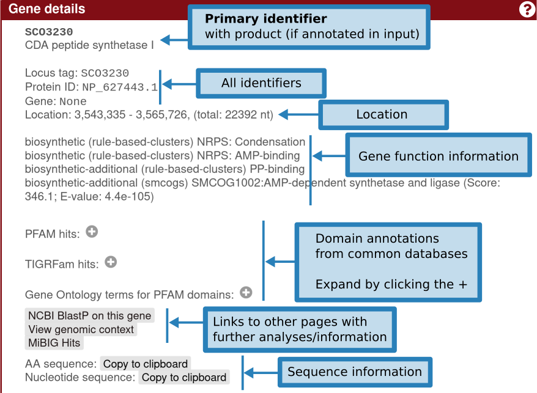

Region Results page#

In the upper panel, "Gene cluster description", information is given about each gene cluster that was detected. In the upper line, the biosynthetic type and location of the gene cluster are displayed. Underneath this title line, all genes present in a detected gene cluster are outlined. The borders of the gene clusters have been estimated using different greedily chosen cut-offs specified per gene cluster type. Genes are color coded by predicted function. Putative biosynthetic genes are colored red, transport-related genes are colored blue, and regulation-related genes are colored green. These predictions depend on the smCOG functionality an will be missing if you chose to not run smCOG predictions. Hovering over a gene with the mouse will prompt the gene name to be displayed above the gene.
Gene details#

Clicking the gene will provide more information on the gene: identifiers, existing product annotation, gene functions (including smCOG, or secondary metabolism gene family, if enabled), its location, and cross-links specific to that gene.
Detailed annotation#
In the middle panel, "Detailed annotation", you can find more in-depth information on the selected gene cluster.
Individual prediction tools will add tabs here to provide their results.
Detailed annotation for PKS/NRPS domains#
For predicted modular polyketide synthase (PKS) and/or nonribosomal peptide synthetase (NRPS) proteins, you will find the domain annotations and any modules that are detected.
The module overlays can be hidden by enabling the "Show module domains" option.
Clicking on a domain will display more information, such as the name of the detected domain, its precise location, any substrate specificites or other predictions, and a link to run Blast on the domain. A list of detected domains can be found here.
Identifying similar BGCs#
The tab "Homologous gene clusters", displays the top ten gene clusters from the internal antiSMASH database that are most similar to a detected gene cluster, visually aligned to it. The drop-down selection menu can be used to browse through the gene clusters. Genes with the same colour are putative homologs based on significant Blast hits between them. Similar information is provided in the "KnownCluserBlast folder", which detects BGCs included in the curated MIBiG dataset. "SubClusterBlast" provides information about conserved operons, which, for example are involved in precursor biosynthesis of non-proteinogenic amino acids.
Transcription Factor Binding Sites prediction#
The Transcription Factor Binding Sites tab is explained on its own page.
Prediction of putative core sturctures#
In the upper side panel on the right. "Predicted core structure", a rough prediction of the overall chemical structure of a the product of a detected nonribosomal peptide or polyketide biosynthesis gene cluster is given. The second folder "PKS/NRPS monomers" displays detailed predictions for all monomers. Prediction details are available for multiple methods.
PKS type I AT domain specificities are predicted using a twenty-four amino acid signature sequence of the active site (Yadav et al., 2003), as well as with pHMMs based on the method of Minowa et al. (Minowa et al., 2007), which is also used to predict co-enzyme A ligase domain specificities. NRPS A domain specificities are predicted using both the signature sequence method and the support-vector machines-based method of NRPSPredictor2 (Rausch et al., 2005 & Röttig et al., 2011), and the method of Minowa et al. (Minowa et al., 2007). Ketoreductase domain-based stereochemistry predictions for PKSs (Starcevic et al., 2008) are also performed.
For PKS type II clusters, the side panel shows a list of the predicted starter units along with bitscores, a list of the predicted number of malonyl elongations along with bitscores, the predicted product class, a list of product molecular weights predictions for each combination of starter unit and number of malonyl elongations. Furthermore, it displays each gene/protein that is involved in the polyketide biosynthesis of the cluster. For each gene/protein the type is indicated and for some a prediction of function is displayed. More details on the predictions can be found here.
A chemical structure is displayed for NRPS and Type I PKS metabolites, which is derived by combining the results of the domain analyses.
IMPORTANT NOTE: This is a structure prediction of the core structure of the molecule; it is very likely the final molecule will be different!
Downloading results#
In the upper right, a small list of buttons offers further functionality. The question-mark button will get you to this help page. The exclamation-mark button leads to a page explaining about antiSMASH. The downward-pointing arrow will open a menu offering to download the complete set of results from the antiSMASH run, a summary GenBank output file, or a log file for debug purposes. The GenBank file can be viewed in a genome browser such as Artemis.
Results on the public webserver are only kept for ONE month and will be deleted afterwards. It is highly recommended that you download the full result set before they expire.